Primal Gambit — Rule of Three
TL;DR
- Random Battle mode: each player draws a 25-card deck from a collection of 3 copies of every card.
- 2 players, 50 HP each. Reduce the opponent to 0 to win.
- 3 lanes. 🔥Fire beats 🌿Earth, which beats 💧Water, which beats 🔥Fire. ◈Dust always loses (except vs Dust: tie).
- A round = 6 sub-rounds placing 1 card each, alternating, then 1 bonus sub-round for whoever went first to use a power.
- Lane winner deals the lane's accumulated Risk as damage. A tie deals nothing — cards stay and Risk keeps stacking.
- One power per sub-round, max. No power on sub-round 1.
1. Match & Win Condition
Each player starts at 50 HP. Damage is dealt to HP whenever a lane is won. The match ends the instant a player's HP reaches 0.
Flow: Mulligan (swap starting cards) → Combat (repeating rounds) → End screen.
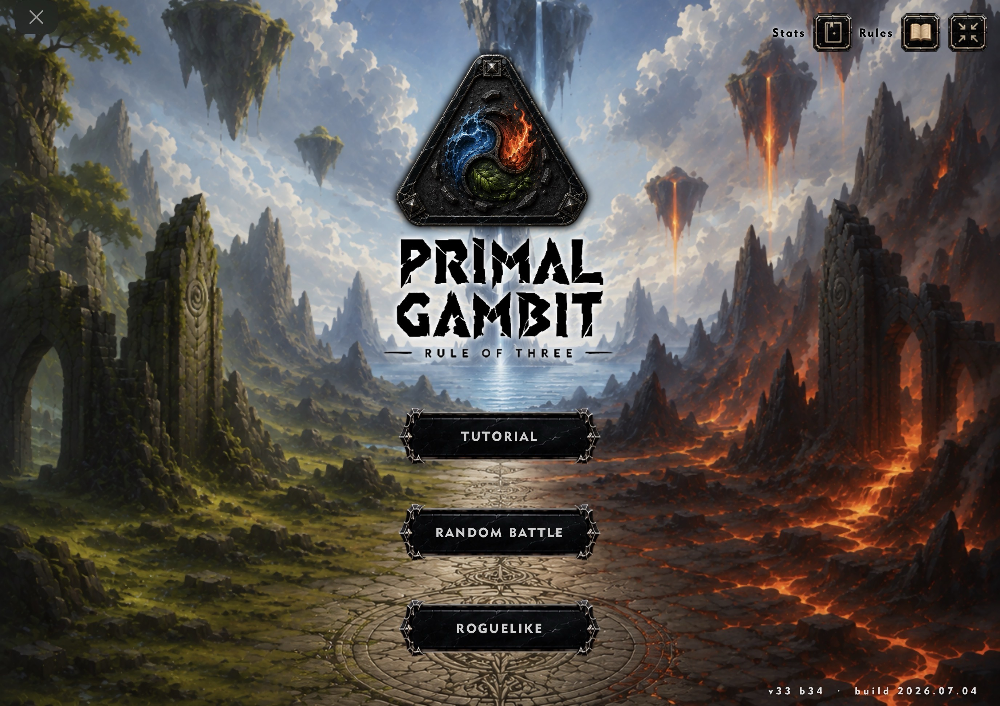
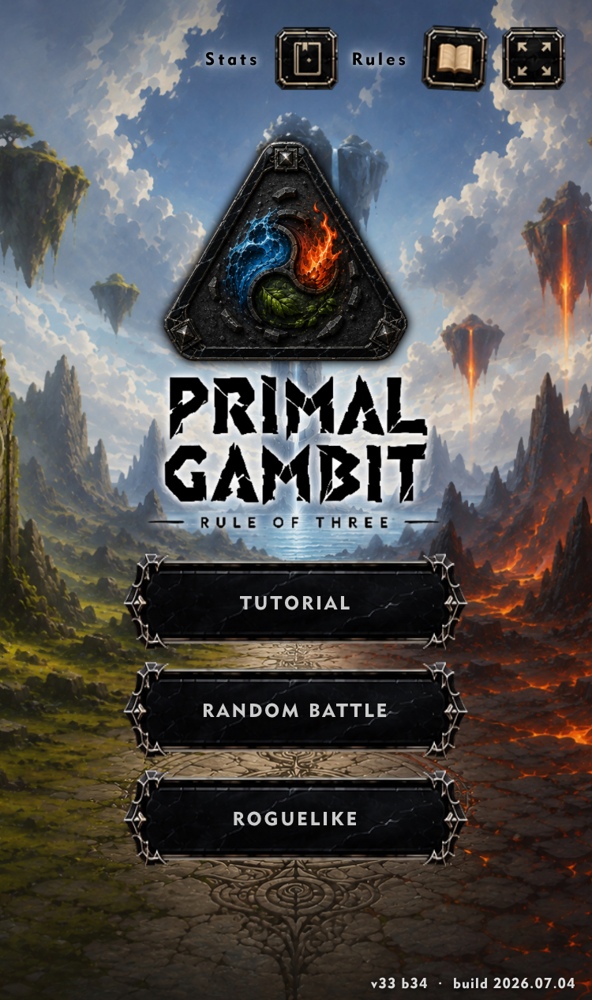
2. Elements & Lane Resolution
Every card has one element: 🔥 Fire, 💧 Water, 🌿 Earth, or ◈ Dust.
- 🔥 Fire beats 🌿 Earth · 🌿 Earth beats 💧 Water · 💧 Water beats 🔥 Fire
- ◈ Dust loses to Fire, Water and Earth. Dust vs Dust = tie.
- Same element = tie ("Deadlock").
A lane resolves once both slots are filled: the winning element makes the loser's card hit the discard, and the opponent loses HP equal to the lane's accumulated Risk (see ch.4). On a tie, both cards stay in the lane and nothing is lost — Risk keeps building for next time.
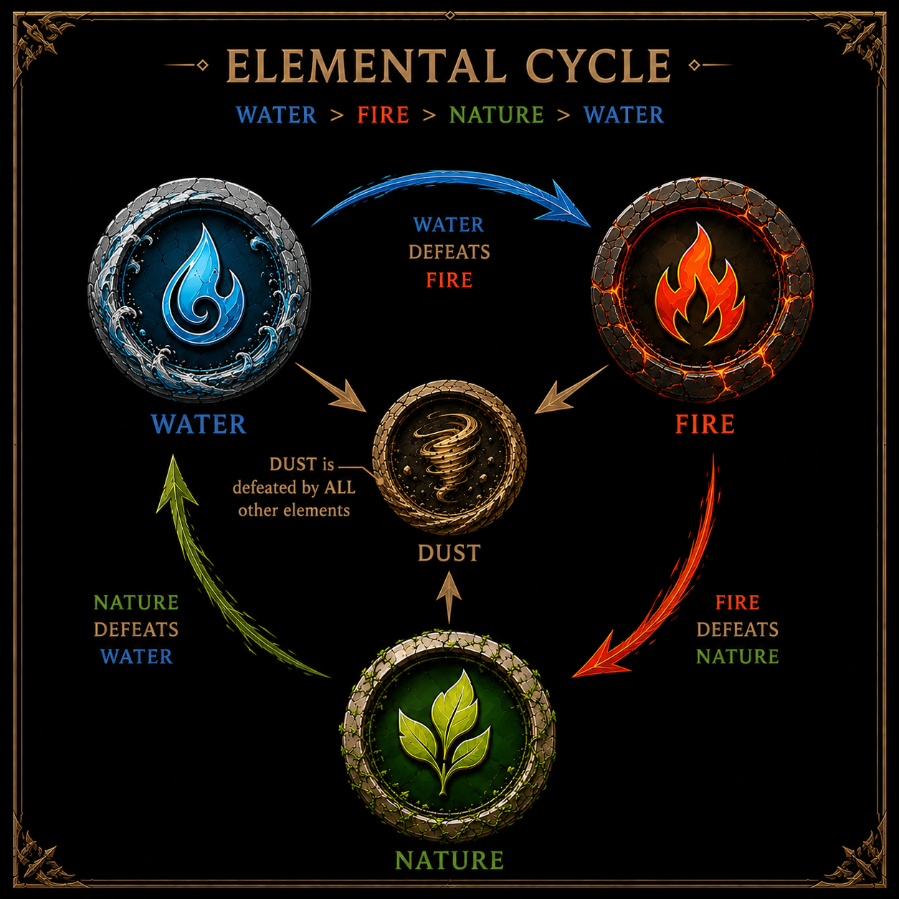
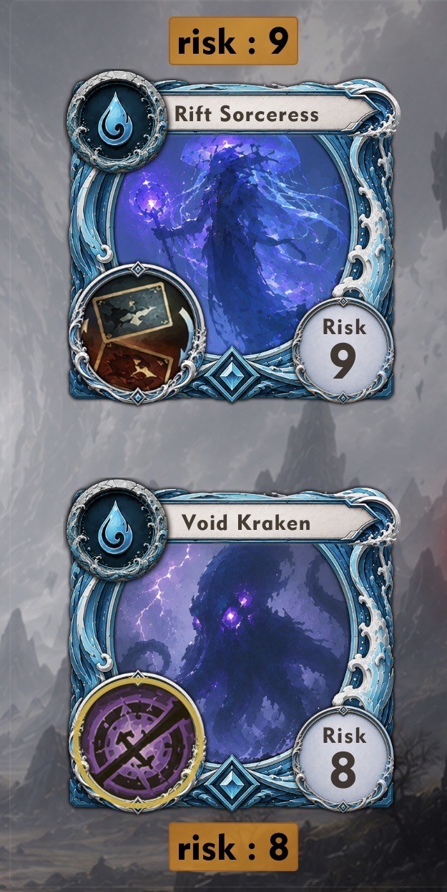
3. Round Structure (the 6+1 sub-rounds)
Initiative (who plays first) alternates every round (random on round 1).
- SR1–SR6: players alternate placing exactly 1 card each, in any empty lane.
- SR1 restriction: no power may be activated.
- SR2 restriction: the second player cannot place opposite the first player's SR1 card (that lane is blocked for them this sub-round).
- Bonus SR7: no card is placed; only the player who went first this round may activate one power.
After SR7, all 3 lanes resolve left → center → right, then both hands redraw up to 4 cards.
Powers: at most one manual power per player per sub-round (including the bonus one). A card's manual power can only be used once per round, even if not activated yet.
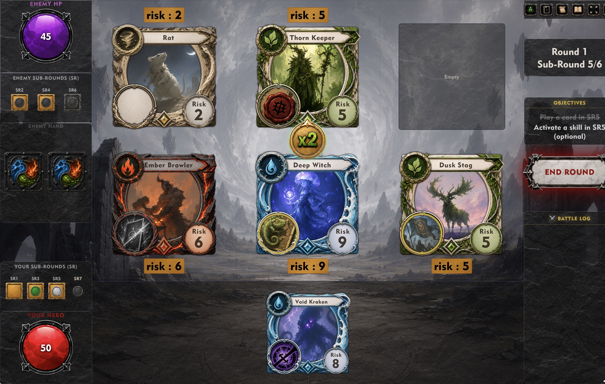
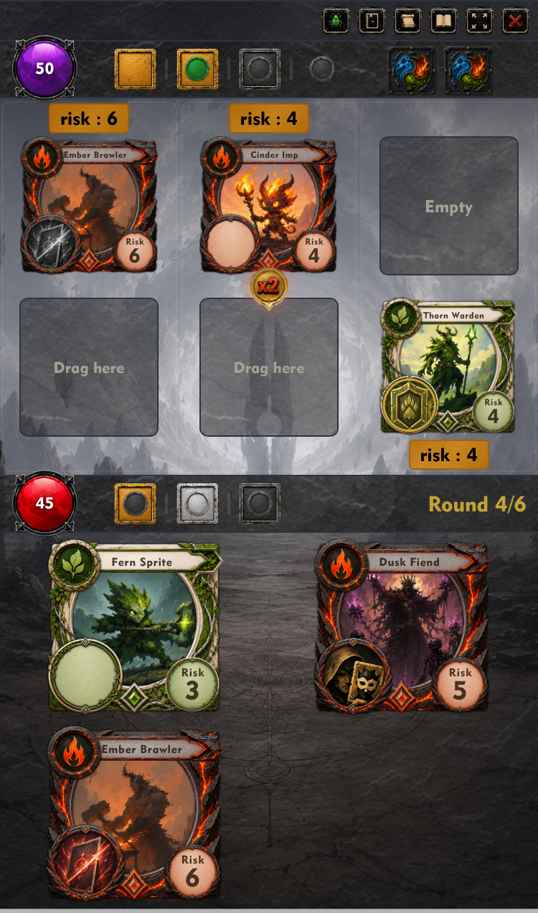
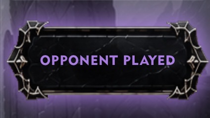
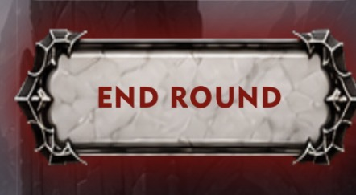
4. Risk & Damage
Each lane has two independent Risk counters (one per side). Placing a card adds its Risk value to its own side's counter.
- Win: the loser's accumulated Risk is dealt as HP damage to the loser's owner, then both counters reset to 0.
- Tie: no damage. Both cards remain in the lane, both Risk counters are kept (not reset) — the next clash in that lane will hit harder.
×2 Lane: one lane (center by default) is marked as the danger lane each round. If the designated side loses it, the damage is doubled. Ownership of who's "at risk" there alternates every round.
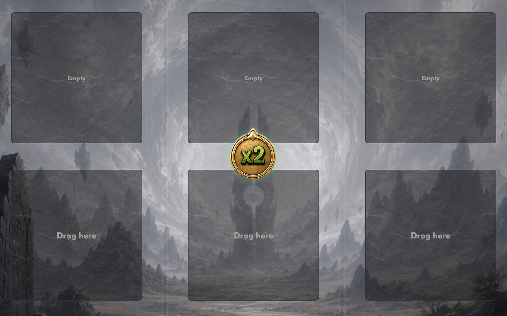
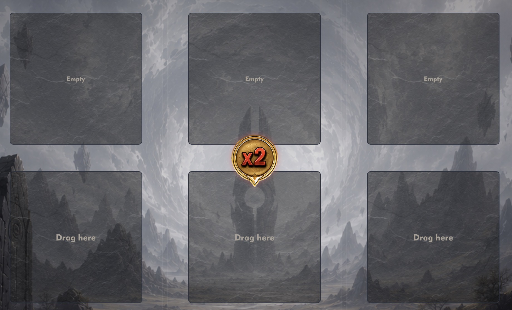
Permanent marks: Guard Mark permanently reduces a slot's Risk by 2; War Mark permanently adds +3 Risk to the opposite slot. Marks persist across rounds until the match ends.
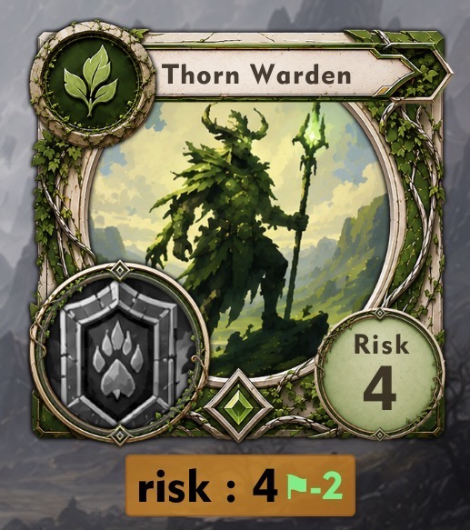
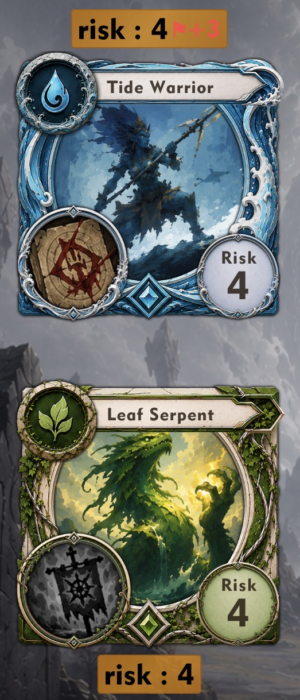
HP indicators: each player's HP is displayed as a circle in the combat interface — purple for the AI, red for the human player.
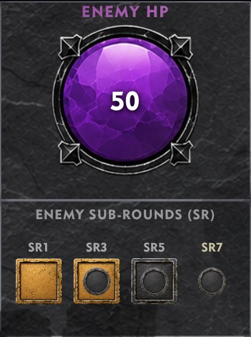
5. Powers
There are three kinds of powers:
- ⚙ Passive — triggers automatically at resolution or placement. No tap required.
- ✦ Instant — fires the moment the card is placed on the board. No tap required.
- ◉ Manual — activated by tapping the card's power icon during your sub-round. Some require choosing a target first.
⚙ Passive powers
| Power & Effect | |
|---|---|
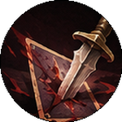 | BackstabAt resolution, on Deadlock: deals 6 dmg to opponent. |
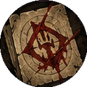 | VendettaAt resolution, if this card loses: deals 4 dmg to opponent. |
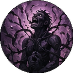 | TormentAt resolution, win vs lower Risk: +7 dmg to opponent. |
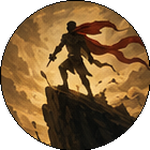 | DeterminedAt resolution, on Deadlock: leaves play without leaving Risk behind. |
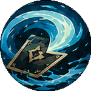 | Flow ChangeAt resolution: if an adjacent ally is Water, the opposite card becomes Water. |
✦ Instant powers
| Power & Effect | |
|---|---|
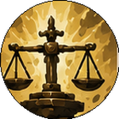 | JudgementAt resolution: loser of the element match → Dust (both if tied). |
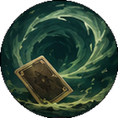 | RefreshWhen placed: restores all used manual powers on your cards. |
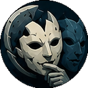 | MimicWhen placed: copies the opposite card's power. Ready to use immediately. |
◉ Manual powers
| Power & Effect | |
|---|---|
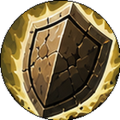 | DefendAdjacent allies: −3 accumulated Risk in their lane slot (min 0). Does not affect the card's own Risk value. |
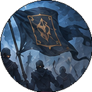 | RegroupReplaces your whole hand with random cards from your deck. |
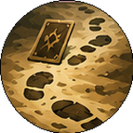 | RetreatReplaces this card with a random one from your deck. |
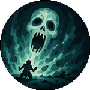 | TerrifyReplaces the opposite card with a random one from the enemy deck. |
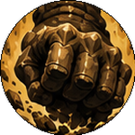 | CrushOpposite card Risk ≤ 6 → Dust. |
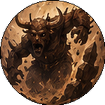 | OverpowerOpposite card Risk ≥ 9 → Dust. |
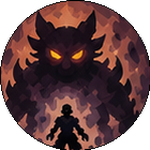 | IntimidateOpposite card, same element & lower Risk → Dust. |
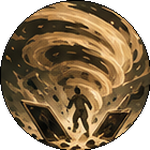 | Dust StormBoth cards in this lane → Dust. |
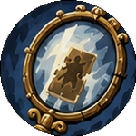 | MirrorCopies the opposite card's element. |
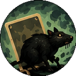 | MorphTransforms into a Rat (Dust, Risk 2). |
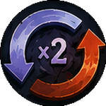 | Power ReverseReverses the ×2 Risk Multiplier direction (▲↔▼). |
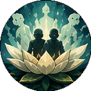 | PurifyClears all Deadlock Risk from this slot. |
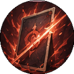 | StrikeDeals 5 direct damage to the opponent. |
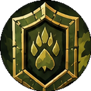 | Guard MarkPermanently applies −2 Risk to this slot. |
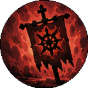 | War MarkPermanently applies +3 Risk to the opposite slot. |
BetrayalThis card's Risk → 2, then swaps places with the opposite card. | |
ExhaustOpponent cannot activate any power during their next sub-round. | |
Cede & SeedSelf → Dust; chosen adjacent ally → Earth. | |
ChameleonCopies an adjacent ally's element. | |
DoppelgangerBecomes an exact copy of an adjacent ally (element + Risk + power). | |
ManeuverSwaps places with an adjacent ally. | |
DustshotSelf → Dust; chosen non-opposite enemy → Dust. | |
ExtinguishChosen Fire enemy → Dust. | |
VoidPermanently disables a chosen enemy card's manual power. | |
IgniteChosen ally → Fire element. | |
Vampire KissChosen ally becomes an exact copy of this card (element + Risk + power). | |
Disguise AllyThis card becomes Dust. A chosen adjacent ally becomes a copy of a chosen enemy card on its lane. | |
SealPassive. If this card loses a battle, you only take damage equal to its own Risk — not the full accumulated Risk. | |
LeapMoves this card to a chosen empty ally slot. | |
OvergrowthEvery card sharing a chosen element → Earth. | |
Power ShiftMoves the ×2 Risk Multiplier to a chosen column. |
6. Hand, Deck & Mulligan
Random Battle: each player's deck is built automatically before the fight. The difficulty level affects how powerful each side's deck is — higher difficulty gives the opponent a stronger deck while yours may be weaker.
Hands hold 4 cards at all times; after each round, players redraw up to 4.
Winning a lane returns your card to your hand. Losing sends it to the discard. A tie keeps both cards in the lane.
Mulligan: before the first round, drag any of your 4 opening cards onto the deck to swap it for a random new one. No limit on how many you swap.
Deck Manager: in Custom mode or Roguelike, you can build and edit your own 25-card deck. Maximum 3 copies of the same card. The deck's total Risk is shown in the header.
7. Game Modes
Random Battle: a quick single match. Select your difficulty level before the fight — this adjusts both deck strength and AI anticipation depth.
Roguelike: a campaign of 20 consecutive fights against progressively stronger opponents. You begin with a starter collection and earn 2 new cards (always with a power) after each victory. You have 3 lives — lose 3 fights and the run ends. Win all 20 with at least one life remaining to complete the run. Between fights you can adjust your deck using the cards you've collected.
Tutorial: a series of 8 self-contained puzzles of increasing difficulty. Each puzzle places you in a specific scenario with fixed cards on both sides, and guided hints from the cards themselves. Complete each puzzle to unlock the next. The tutorial is the best starting point if you are new to the game — it introduces the rules one mechanic at a time.
8. Card Compendium
All cards currently in the pool, grouped by element. Each shows element, Risk value, and power. Tap any card to open its full detail panel.